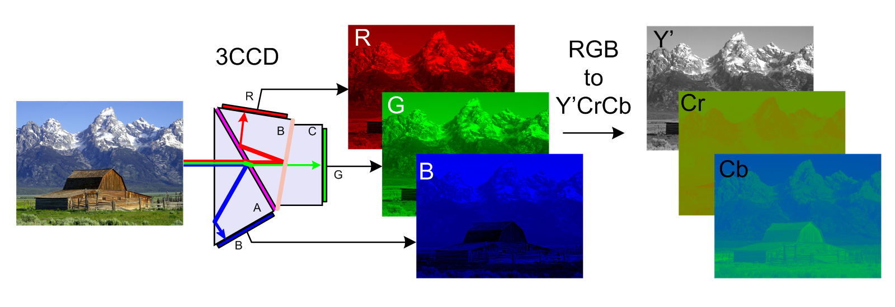
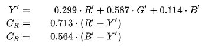
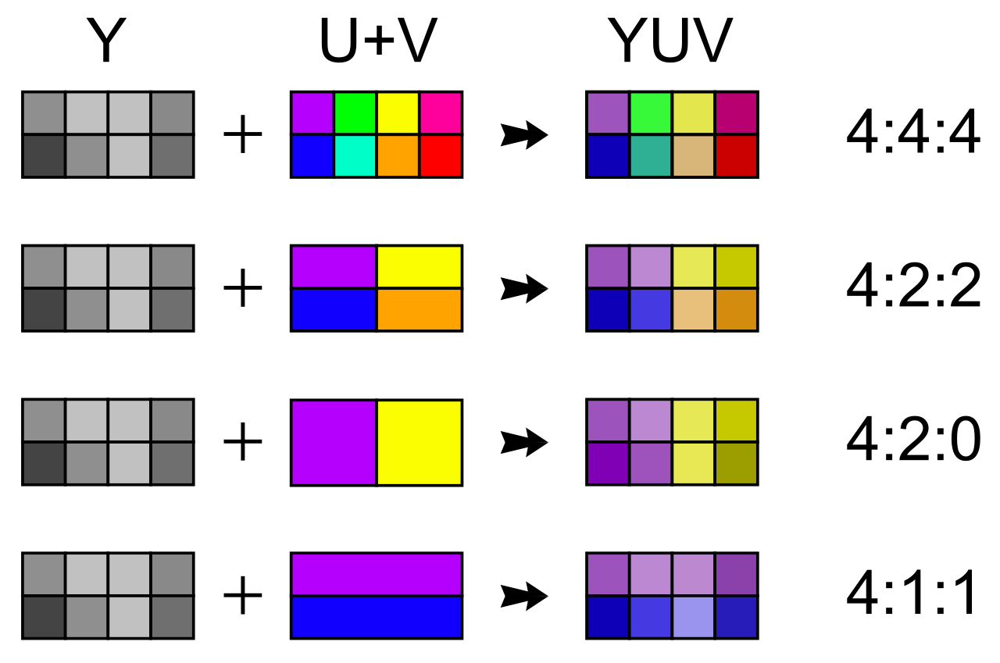

Компонентное видео
Оптическое изображение формируется с помощью объектива на светочувствительной матрице видео- и телевизионных камер, телекинопроекторов,
цифровых фотоаппаратов, камерафонов или планшетов, веб-камер, камер систем видеонаблюдения и других подобных устройств.
С помощью различных систем производится цветоделение изображения для получения монохромных полутоновых компонент трёх основных цветов.

После применения гамма-коррекции сигналов R, G, B производится их преобразование для получения сигнала яркости Y' и двух цветоразностных сигналов: R'-Y' и B'-Y'.
В соответствии с 601-й рекомендацией ITU-R применяется кодирование по следующим формулам для перевода компонентного видеосигнала в цифровую форму:

Преобразование цветоделённых компонент RGB в Y’CrCb
При передаче таких сигналов, возможно восстановление исходных составляющих цветов: красной (R), синей (B) и зелёной (G), которые используются в большинстве систем отображения видеоинформации,
например в мониторах.
Уровни видео
Полученные компоненты Y', Cr, Cb квантуются с разрядностью 8 или 10 бит. Однако не все уровни используются для передачи сигналов яркости. Например, для 8 битного кодирования из
256 доступных уровней только 220 используются для передачи сигнала яркости (диапазон 16-235), а остальные — для сигналов синхронизации. При 10-битном кодировании — используется 877 уровней.
Для цветовых компонент используется только 225 уровней в 8-битной системе и только 897 дискретных уровней видео в 10-битной системе.
Цветовая субдискретизация
Форматы цветовой субдискретизации

При дискретизации Y', Cr, Cb компонент видеосигнала для сокращения скорости потока применяется так называемая цветовая субдискретизация. Если дискретизация каждого компонента производится с
одинаковой частотой, такая схема будет называться 4:4:4. Однако она редко применяется на практике, из-за её избыточности. Для цифровых видеостандартов принято базовое соотношение 4:2:2,
которое означает, что цветоразностные компоненты Cr, Cb передаются с горизонтальной чёткостью, в два раза меньшей чёткости яркостного сигнала, потому что человеческий глаз более чувствителен к
изменению яркости, чем цвета. При этом частота дискретизации для яркостного сигнала Y' устанавливается равной 13,5 Мегагерц, что в два раза больше, чем для цветоразностных сигналов Cr и Cb — 6,75
Мегагерц. В целях дальнейшего сокращения избыточности сигналов цветности применяются схемы с соотношением 4:2:0 и 4:1:1. В последнем случае горизонтальная чёткость цветоразностных сигналов
снижается до четверти от полного разрешения сигнала яркости. Оба варианта 4:1:1 и 4:2:0 вдвое сокращают пропускную способность по сравнению с представлением без субдискретизации.
Для сигналов ТВЧ согласно части II Рекомендации ITU-R 709-3 установлены частоты дискретизации сигналов яркости 74,25 МГц и цветности 37,125 МГц.